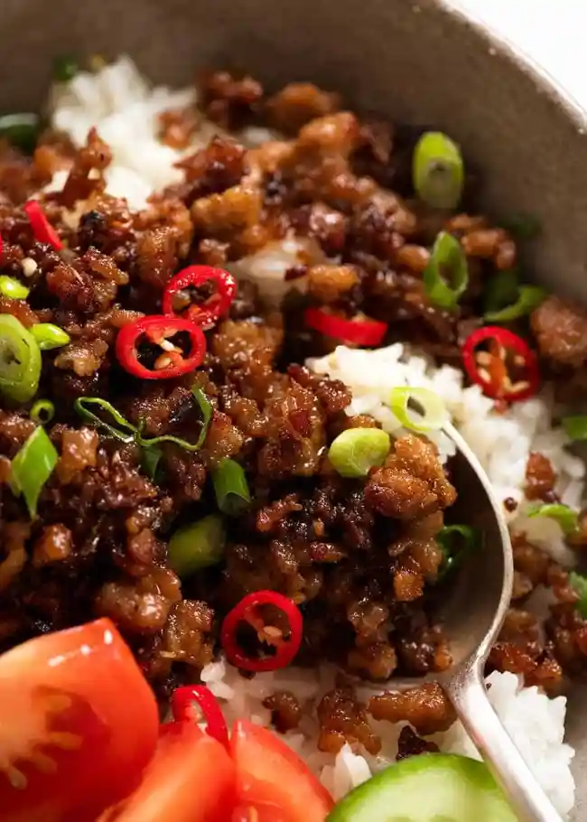

Caramelized Pork Bowls

Want a melt-in-your mouth easy-to-make dinner?
Look no further.
This simple recipe using just a few
ingredients is guaranteed to make
everyone ask for seconds. Any ground meat
will do well in this recipe, I just prefer
to use ground pork. The best thing about
this recipe is how versatile it is. You are able
to add or omit any ingredients you want to
customize to your preferences.
Ingredients
Necessary ingredients
- 1 pound of ground pork (or any ground meat)
- 5 tbsp brown sugar
- 2 tbsp soy sauce
Optional ingredients
- Cooking oil of choice
- 1 onion, diced
- 3 garlic, minced
- 1 tsp ginger, minced
- 1 green onion diced, green and
white parts kept separate
- Chiles or peppers: thai,
habanero, jalapeno etc
- Chicken bouillon
Optional toppings
- Tomato, diced
- Cucumber, diced
Steps
Prep
- Dice/mince onion, garlic, ginger,
white parts of green onion, and any
chiles/peppers
- Green parts of green onions
diced and set aside
- Combine brown sugar, soy sauce, and bouillon
and set aside
Cooking
- Heat pan over medium heat with a little bit of oil
- Cook onions until browned
- Add ginger, garlic, white parts of green
onion, chiles/peppers
- Add ground pork and cook until pink is gone
- Add brown sugar, soy sauce, and chicken bouillon
- Turn heat to high and cook meat 2 minutes
at a time until meat is caramelized to your liking.
Note: May take 10+ minutes, so be patient
until it all comes together
- Top with: green parts of green onion, cucumber, and
tomatoes